WALT
Wheeled Autonomous Locomotion Traveler
2024
 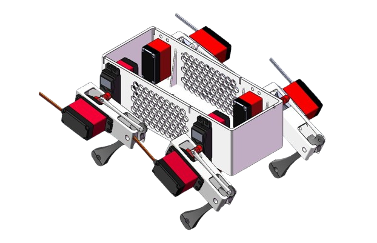
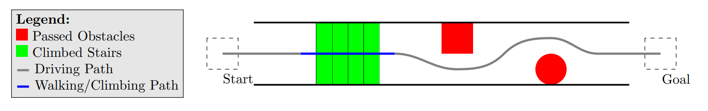
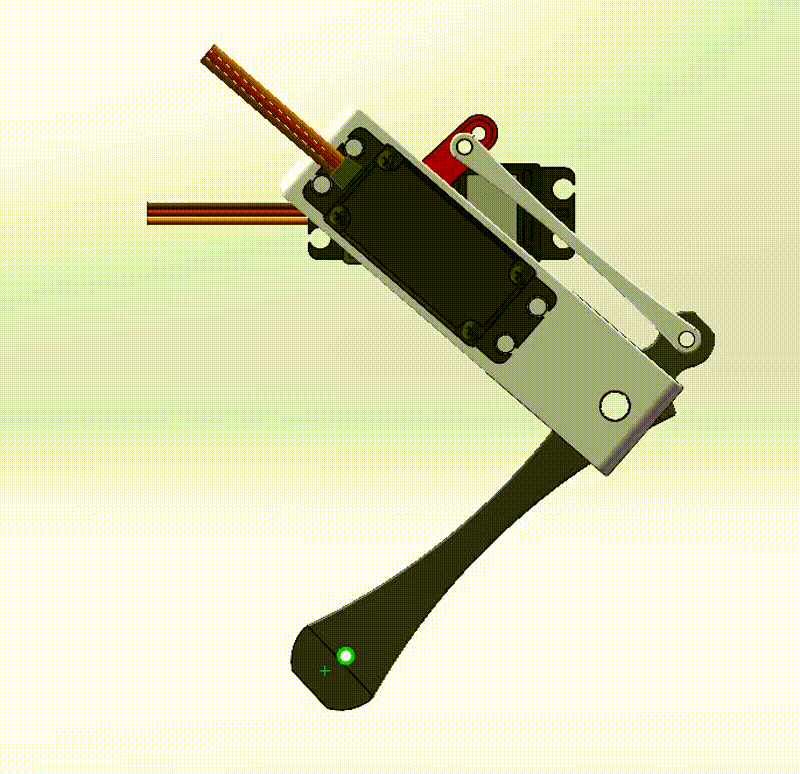
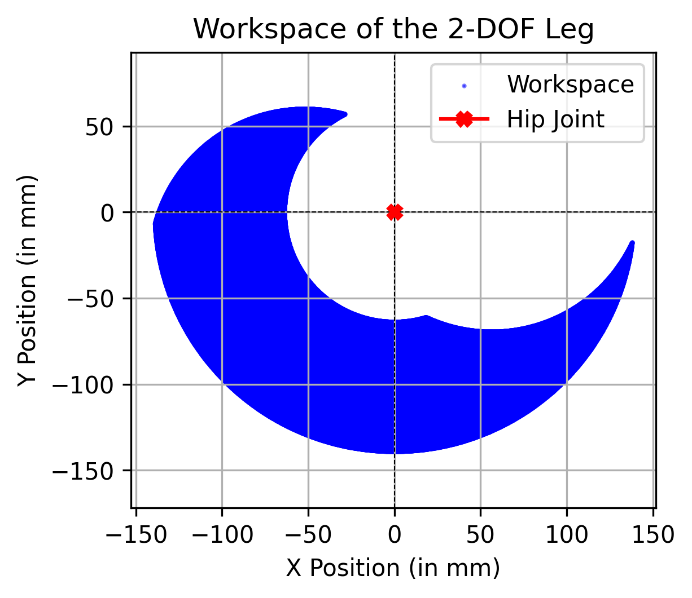
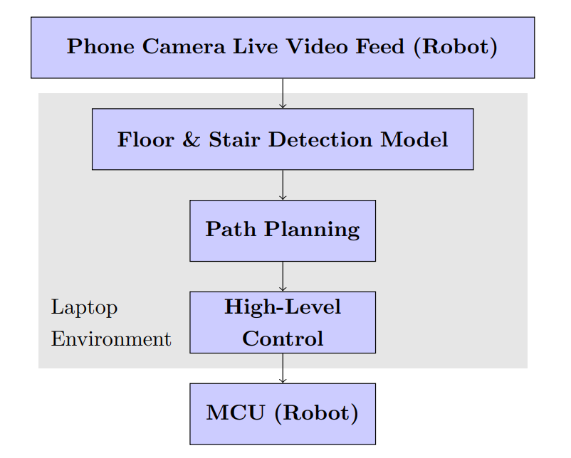
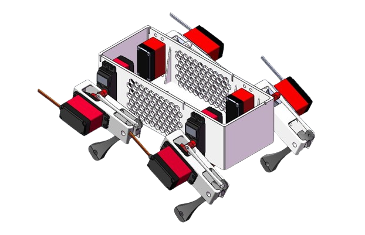
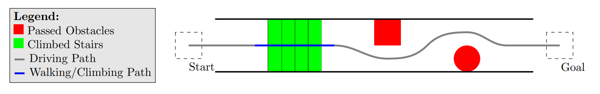
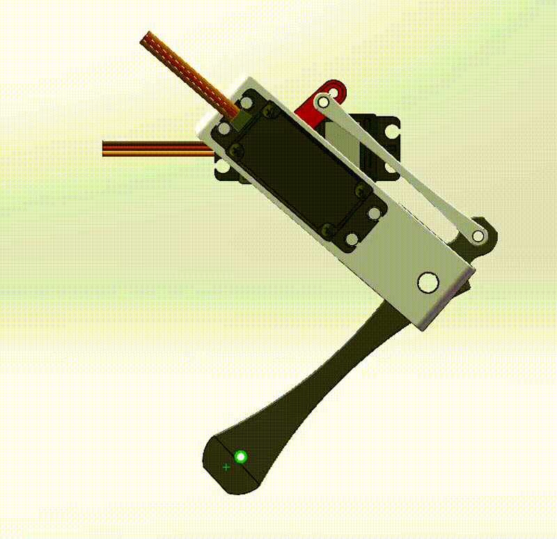
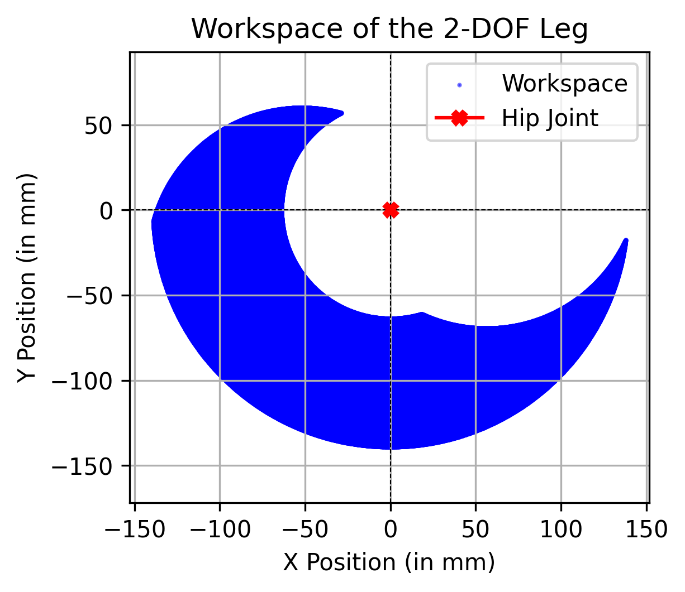
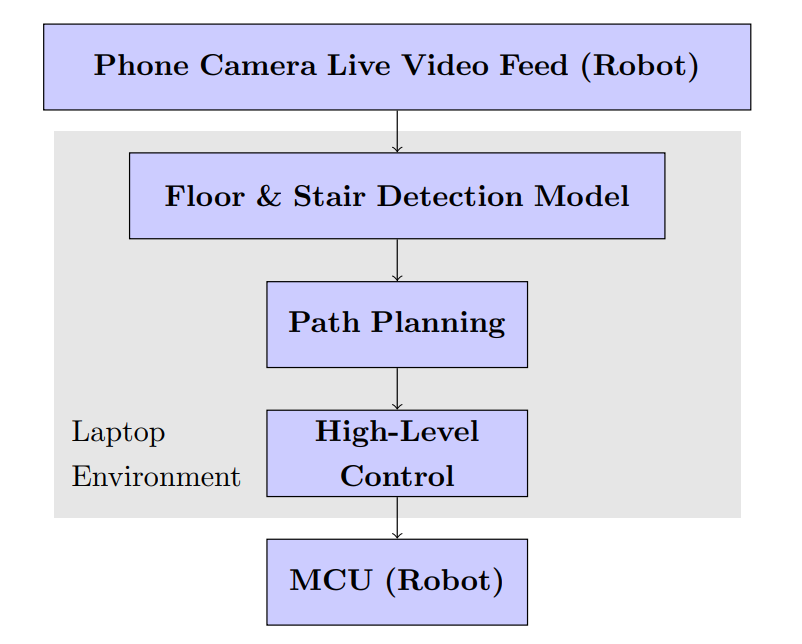
 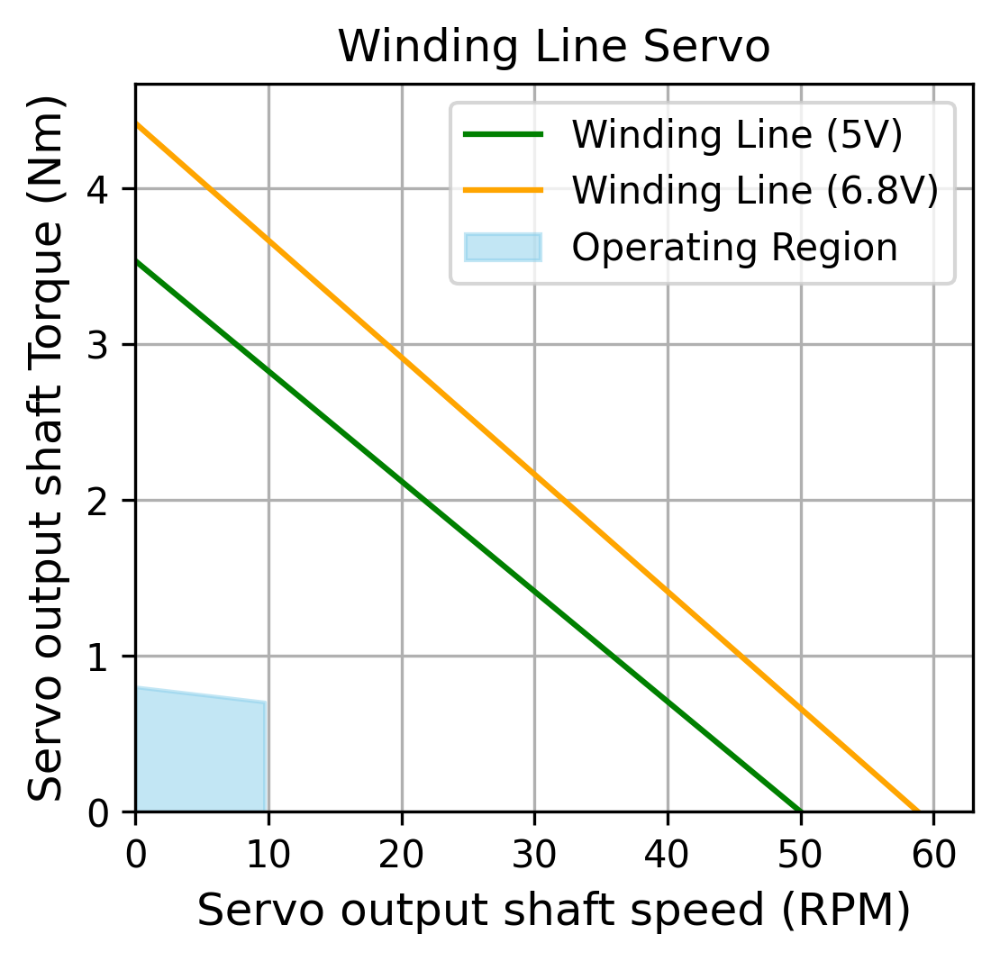
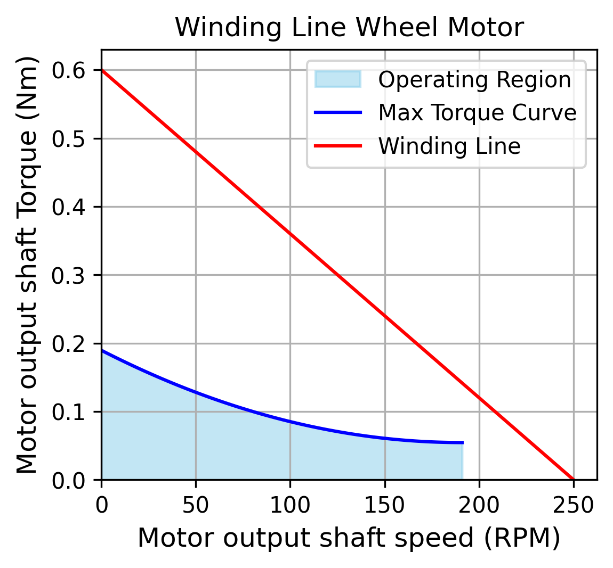
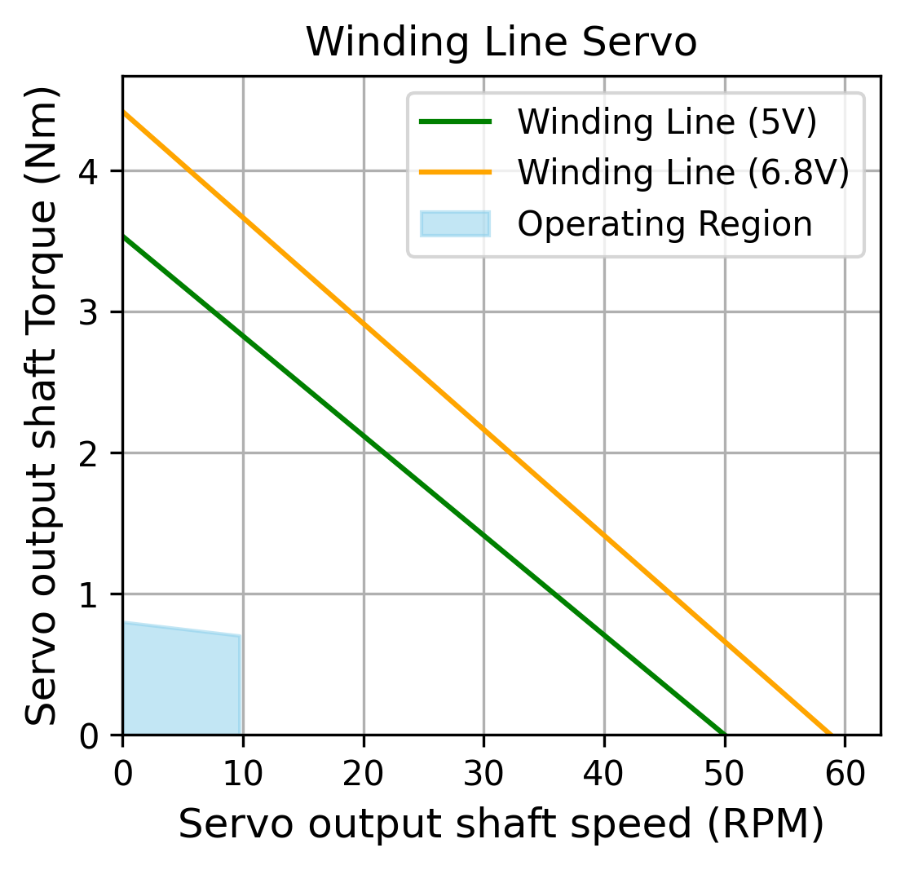
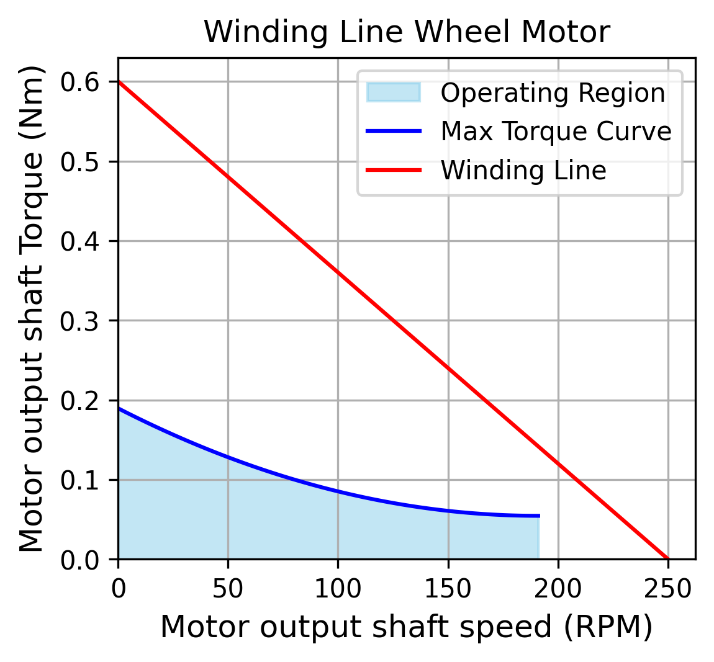
Overview
An autonomous wheeled quadruped robot that navigates, avoids obstacles, and climbs stairs in a controlled corridor environment by integrating advanced perception, real-time path planning, and hybrid locomotion that switches between driving and walking/climbing modes.
Objectives
The WALT project focuses on the design and development of an autonomous quadruped robot capable of both driving and climbing. The main objectives include:
- Autonomous Navigation: Driving from a start point to an endpoint in controlled environments.
- Obstacle Avoidance & Stair Climbing: Seamlessly switching between driving and climbing modes based on environmental cues.
- Real-Time Decision-Making: Using sensor data (from an RGB camera) to enable dynamic path planning and obstacle detection.
System Architecture
The robot's architecture is designed to integrate multiple systems:
- Perception & Path Planning: Processes live camera feeds using advanced object detection (via the YOLO11 segmentation model) to identify drivable surfaces and obstacles.
- Electronics & Microcontroller: Executes high-level commands, managing motor control and sensor communication.
- Control System: Translates sensor data into precise actuator commands for smooth and stable locomotion.
- Mechanical Design: Ensures that the hardware (legs and main body) supports the dynamic tasks of driving and climbing.
Mechanical Design
Leg Design & Iterative Prototyping
- Conceptualization: The project started with multiple leg prototypes, each improving upon the previous design.
- Final Design: A 2-DOF per leg configuration (with hip pitch and knee joints) allows full independent control and ensures sufficient workspace for walking and climbing.
- Gait Cycle Simulation: Inverse kinematics and workspace analysis were used to develop a stable and efficient gait cycle.
Main Body
- Integrated Structure: The main body was designed to house the microcontroller, battery, smartphone (for camera feed), and securely mount the four legs.
- Lightweight & Robust: A perforated honeycomb pattern reduces weight while maintaining strength and ensuring adequate airflow.
Electrical Design
- Motor & Servo Selection: Detailed performance analyses ensured that selected DC motors and servos met torque and speed requirements with a strong safety margin.
- Hybrid Movement Algorithm: A coordinated algorithm integrates quadruped leg movements with wheel-based locomotion, enabling seamless switching between driving and climbing modes.
Perception & Path Planning
- Video Feed & Detection: A smartphone camera streams live video at 720p/60fps while the YOLO11 model detects floors and stairs in real time (interference on CPU: 10FPS).
- Path Planning: A custom algorithm calculates the optimal route by determining the corridor centerline and adjusting for obstacles, ensuring smooth navigation.
- High-Level Control: Turning rate and stair detection parameters are computed and sent via Bluetooth, facilitating accurate maneuvering.
Results
- Successfully developed a robust leg mechanism, perception pipeline and integrated control system.
- Validated the design through simulation and performance analyses, ensuring that the robot can navigate and overcome obstacles.